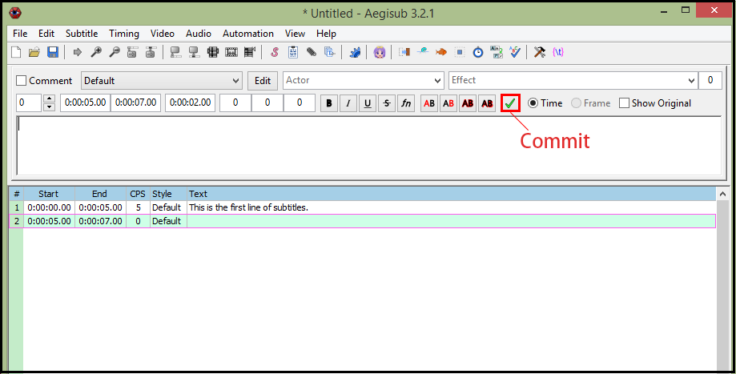
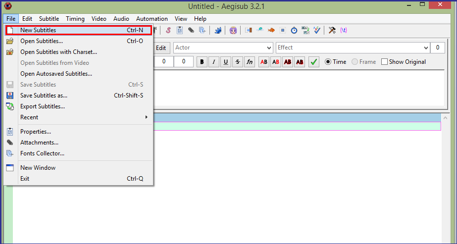
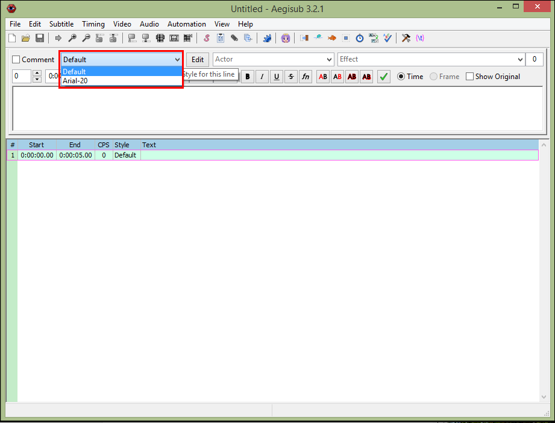
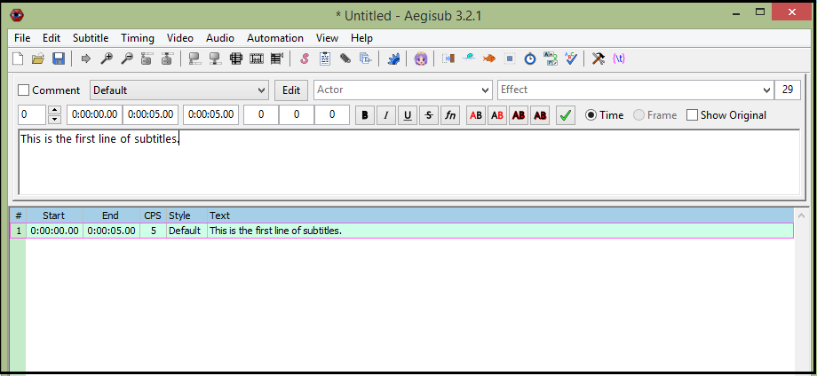
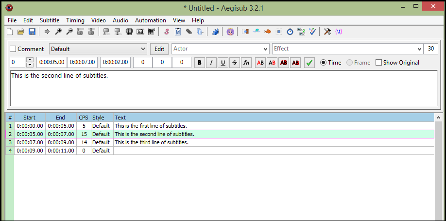
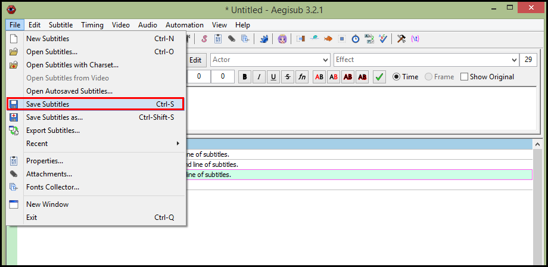
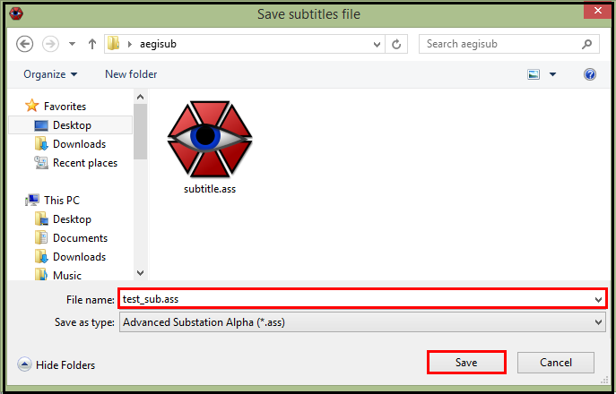

Editing Subtitles
Editing subtitles is the first task you do for adding subtitles to a video because you need to have subtitles before you can add them. Aegisub is a software program originally designed for editing subtitles. The editing procedure is similar to that of a general text editing software, but Aegisub has some functions designed specifically for subtitle editing.
To edit subtitles:
- From menu, Click File | New Subtitles.
- In subtitles editor, click the style drop-down menu to select desired style from the list.
- Type subtitles in the subtitles editor.
- To finish the current subtitle line and start a new subtitle line, do one of the following:
- Click Commit button.
- Press Enter.

- If you want to modify a line that is not in the subtitles editor, click the line in the subtitles grid.
- When you finish editing subtitles, click File | Save Subtitles to save the subtitle file.
- Type the file name in the File name field, and click Save button to save subtitles file.
The subtitles editor and the subtitles grid will be displayed.


The same subtitles will also be displayed in the subtitles grid.

The line will be displayed in the subtitles editor. The background of the selected line in the subtitles grid becomes light blue.


